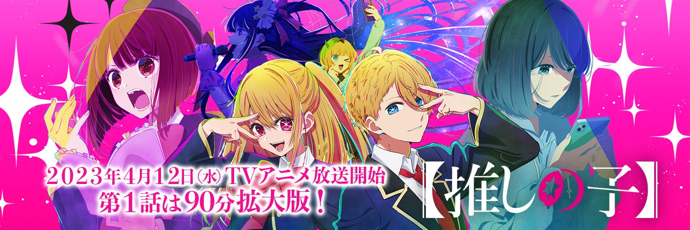
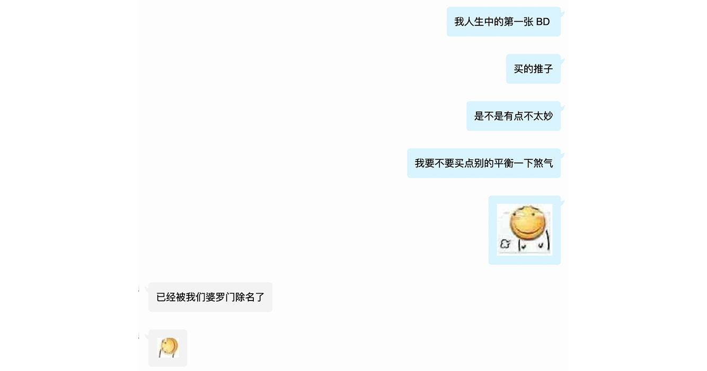
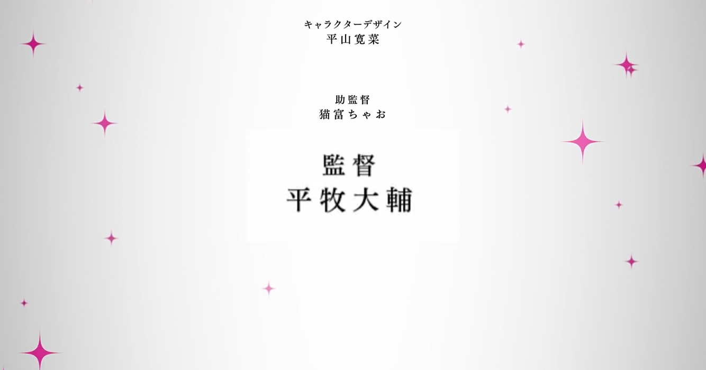
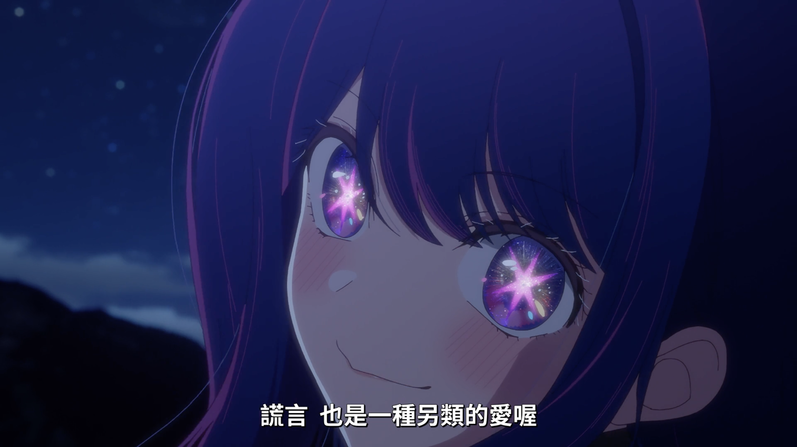
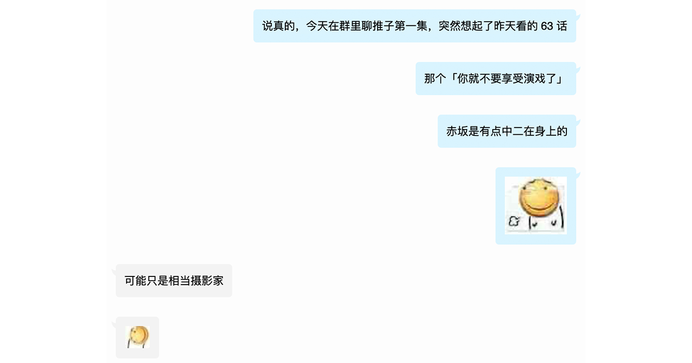
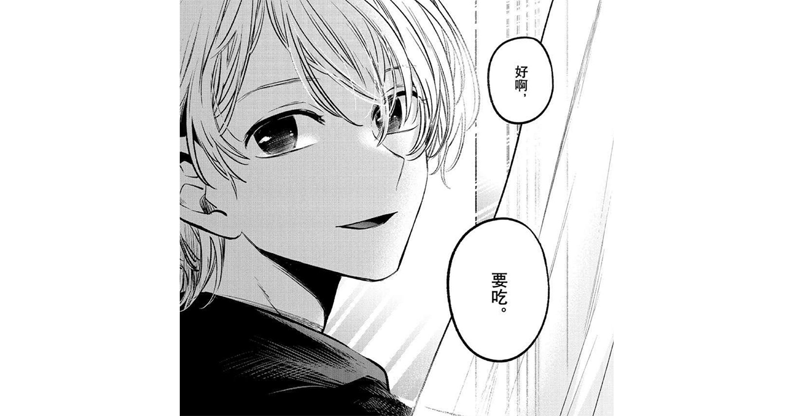

说实话我有点上头。
一个艳阳高照的周末，吃着甜甜圈喝着厚乳拿铁的我看见了某部新番，熟悉的两个名字和完全不会出错的制作公司映入了我的眼帘。然后我带着期待和好奇心点了进去。
然后我有点后悔吃了那两个甜甜圈。
然后反手定了第一集的 BD。
Shut up and take my money.

如果作品第一集搞噱头做剧场版，一般有两种可能。一种是设定讲不全需要疯狂补充细节，一种是搞个大噱头宣发棒棒哒（?）
举个例子，SAO 3 Alicization 篇是希望两者都沾的，但是我支持前监督伊藤智彦的看法，小野学监督和 A-1 Pictures 没能力你知道吧，再这样下去要输厕纸了（捂脸）。
然后《推子》也是双点技能树的。
只是这次点的堪称完美。
这次的监督是平牧大辅，把我带进动画工房作品的万恶的男人。

动画工房的分镜是很标准的。平牧监督的分镜无可挑剔，这和我第一次看到山田监督富有创造性和独特质感的奇妙分镜的感觉完完全全不一样。但是严谨的分镜对《推子》这种有着相当冲击感的开头真的是美妙至极。
大赤老师又拿到了绝好的制作资源，这时候我就很想采访一下集英社，和住在他病房隔壁的谏山创老师。
在第一集演进过程里我是有种悲剧结局的预期的，但是我是真的没想到第一集的结局。我最多想到的是舆论问题，没想到直接整生死离别。赤坂老狗！（啊我胃好痛）
Ayase 善于写命题作文。
我看第一集之前没搞懂 YOASOBI 新歌到底唱的是啥玩意。
看完之后「好活 Ayase！」
MV 监督是中山直哉，书记舞创举创立者。建议 Ayase 给监督磕一个（bushi）すごいな YouTube で！
赤坂的作品总能给我一个好开局，他的开篇是真的打动我，这是要才华的。《推子》的第一集我真的太喜欢了，感谢新海诚导演今年甚至都没挣扎，我的年度动画电影可以毫无顾虑的给《推子》第一集。希望下半年业界再接再厉再创辉煌（bushi）
我这么说的原因可能是我还没看汤浅政明的犬王，周末看周末看。
我有一个固定但波动的日轻交际圈（这话说得很日轻我很满意）。其实我很早就被朋友安利了《推子》，纵使他们对这部作品「完全不抱有任何期待」，但不知为何我一直没抽出时间来看看。只不过看完第一集上头的我还管什么明天任务繁多今晚看完可能直接胃绞肝裂而亡，看就完事了~
然后看完之后我的感觉像是痛苦的幸福，然后开始胃在洗衣机里搅。
然后看《崩铁》杰帕德的 PV 的我满脑子都是「会长不要啊会长」。（すぐ役と声優さんをこうガッとするなお前らはもう！）
「誰かを好きになることなんて、私分からなくてさ」
「喜欢上一个人这种事，我还不太懂」
这又是一部讲「爱」与「谎言」的作品。
主旨类似于《紫罗兰与永恒花园》，但是毫无疑问比它更加黑深残。
带有现实但是脱离现实。讨巧地选择了「芸能界」（演艺圈）这个观者日常接触但是又无比陌生的领域，讨巧地选择了「转生」这个轻小说界超火超烂的特性但是却是现世甚至熟人的环境，讨巧地选择了「现世报」这个日本文化传统但是又无比脱离现世的背景。
作品一定要有悲剧的内核。这样才能狠狠震撼观众的心魄，把美好的东西，尤其是空前绝后究极无瑕恰似天空中闪亮的一等星完美的偶像星野爱毁坏在我们的眼前。
当然毁坏的不止这些，还有星野 アクア 和 ルビー 兄妹温柔闪亮的人生。
这样的冲击不可谓不深。

回归理性，这个设定其实不太适合写成长篇，而且其实这部作品应该也不会太长，赤坂アカ 和 横枪メンゴ 两大业界 人渣 明星的合作势必不会长久。集英社应该还是希望他们各自出个作品发表 （恰钱）。根据剧情进展，我有种漫画会和番剧同期完结的预期。
我能理解赤坂想描（水）绘（聊）所谓「演艺圈暗面」的视角，也明白这个视角的最佳切入点就是日常。但是您第一集的这个调起的是不是有点高？「未成年男女偶像未婚生子」加上「超自然转生」直接就把戏剧冲突点满了，作为写实复仇流作品这样是不行的啊赤坂老师。
而且你居然在吃书忘设定！别和米哈游学坏好不好。（抱头）
主线演进被日常拖累，剧情崩坏功夫全白费，写实背景神明来垫背。
赤坂什么时候和城平京关系这么好了？
我看的应该不是《绝园的暴风雨》第二部吧（?）
纵使这剧情一团乱麻，但是不妨碍我喜欢。
我现在只希望这部作品有一个优秀的结尾。如果没有「凤尾」的话也没关系，这个「开篇」我很喜欢就够了。依旧不失为一部好作品。
但是反正《推子》本来就是很邪道的发病作品。万一大赤老师病出什么好活了，也说不准的。（笑）虽然感觉没什么希望（死鱼眼）
根据我多年的追番经验，千万不要指望赤坂会给你来什么反转。想看糖的也别想了，推理悬疑赤坂也是没能力的。
这作品玩的是一个「写实」加「严肃」，只是有点胃疼。
对我来说本作最遗憾的应该是，高桥李依一个半小时杀青。
我是真的喜欢星野爱。
有着空气感和服务心同时还能和粉丝保持适当距离，拥有完美的业务能力的偶像，我心甘情愿被她欺骗。
同时也一心一意爱着她的孩子。
我现在很能理解黑川的感情，「即使是谎言也是完美的爱」。
还记得他们的母亲对他们有着怎样的期待嘛？
「流れる汗も綺麗なアクア」
流淌着的汗水也如蓝（ア）宝（ク）石（ア）一般美丽
「ルビーを隠したこの瞼」
眼帘下的瞳孔也如红（ル）宝（ビ）石（ー）一般闪亮
希望星野爱能再次像圣母 マリア 一样。
拯救她的粉丝，也拯救她的孩子。这是我唯一的心愿了。

赤坂老师这次只负责剧情不用画画了。
赤坂不自己画真的是，我谢谢他。
这样至少可以保证不会和《辉夜》一样全崩了，至少人体不会崩。
这里我要感谢横枪老师，有时候人设是能改变很多东西的。

谈到人设，《推子》这作品不存在难看的角色，但是我的目光全在アクア身上。
这角色身上有一种很独特的打动我的莫名的氛围。虽然我好像很难说清楚究竟是哪里。但是至少有一点是可以说清楚的，他至少有一张打动我的脸。谢谢星野爱小姐（bushi
然后谢谢赤坂老师给了我一个契机看京极夏彦的作品。
看完第一集之后我就去淘了 アクア 同款文库本。京极夏彦的推理小说志怪感强一些导致我一直没敢看，我还是怕鬼的（叹气）
然后我确实必要把单曲循环从「アイドル」改成「般若心经」了。
我一直在单曲循环，就没停过。